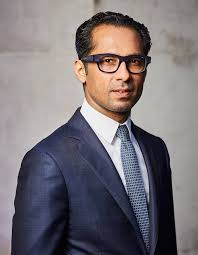
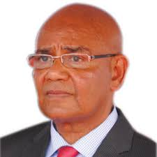
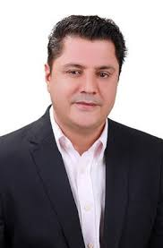
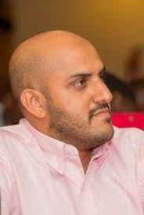
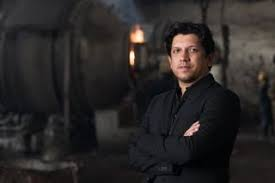
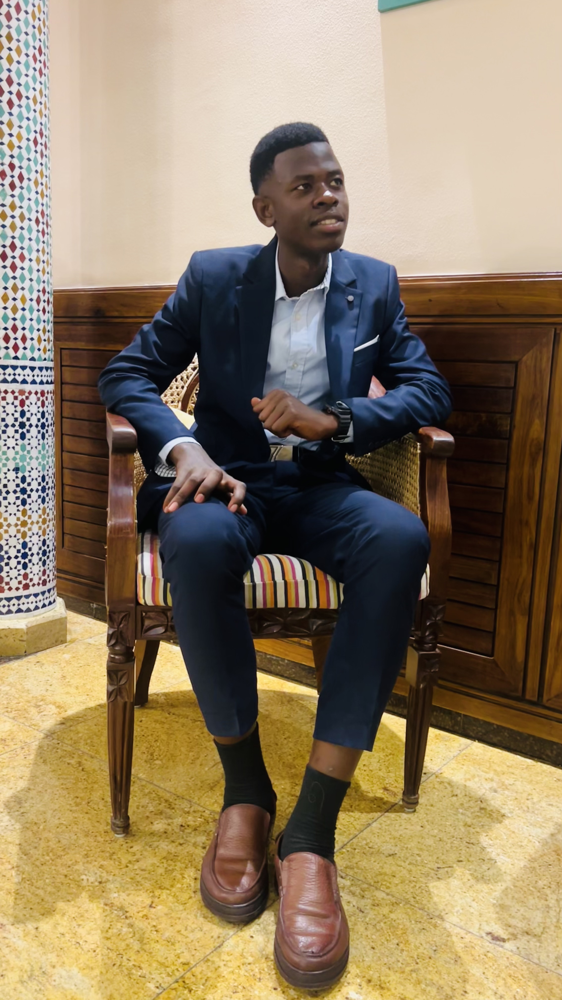

TOP FIVE(5) RICH PEOPLE IN TANZANIA
| NAME |
AMOUNT |
| 1.Mohammed Dewij |
$2.2 billion |
| 2.Said Salim Bakhresa |
$900 million |
| 3.Rostam Aziz |
$700 million |
| 4.Ally Awadh |
$600 million |
| 5.Shekhar Kanabar |
$390 million |
THEIR HISTORY
1.MOHAMMED DEWIJ

Born: May 8, 1975, in Singida, Tanzania
Background: Muslim family of Gujarati Indian descent
Education:
- Arusha Primary School, Tanzania
- High school in the U.S. (Florida & New Jersey)
- Degree from Georgetown University, USA
Business Career:
- Joined family business, MeTL Group, in 1999
- Grew MeTL from $30M to over $2B in revenue
- Operates in over 10 countries
- MeTL is one of East Africa’s largest companies
Political Career:
- MP for Singida Urban (2005–2015)
- Represented CCM party
- Focused on local development,
- Retired from politics after 10 years
Philanthropy:
- Founded Mo Dewji Foundation in 2014
- Supports education, health, and clean water
- Joined the Giving Pledge in 2016
Kidnapping:
- Abducted in October 2018 in Dar es Salaam
- Held for 9 days, released unharmed
- No ransom was paid
Personal Life:
- Married to Saira Dewji
- Father of three
- Lives in Dar es Salaam
- Africa’s youngest billionaire
see in Wikipedia
2.SAID SALIM BAKHRESA

Born: 1949, Zanzibar (then part of Sultanate of Zanzibar)
Nationality: Tanzanian
Background: From a modest family, dropped out of school at age 14
Early Career:
- tarted as a small-time street vendor (selling fried potato chips)
- Opened a small restaurant in Dar es Salaam
- Entered grain milling and flour production in the 1980s
Business Success:
- Founder of Bakhresa Group of Companies
- Operates in food processing, beverages, packaging, logistics, marine transport, and petroleum
- Major brands include Azam (food and drink products)
- Active in over 10 African countries and employs thousands
Achievements:
- Built one of East Africa’s largest business empires
- Known for affordable, high-quality consumer goods
- Major contributor to Tanzania’s industrial growth
Personal Life:
- Private and media-shy
- Family involved in managing the business
- Lives in Tanzania
see on Wikipedia
3.ROSTAM AZIZ

Born: 1960s, Tanzania
Ethnicity: Tanzanian of Arab (Omani) descent
Education: Attended local schools in Tanzania; later studied abroad (exact details are private)
Business Career:
- One of Tanzania’s first billionaires
- Built wealth through trading, mining, communications, and real estate
- Former major shareholder in Vodacom Tanzania
- Owns Caspi Oil, a Kazakhstan-based oil company
- Invests in various sectors including energy, finance, and logistics
Political Career:
- Member of Parliament for Igunga constituency (1994–2011)
- Senior member of the ruling Chama Cha Mapinduzi (CCM) party
- Resigned from politics in 2011, citing political interference and corruption concerns
Wealth and Influence:
- Consistently ranked among the richest individuals in East Africa
- Known for quiet influence in business and politics
- Helped shape Tanzania’s private sector landscape
Personal Life:
- Keeps a low public profile
- Known for philanthropy and community development in his home region
- Based in Tanzania with business interests spanning Africa, Asia, and beyond
see on Wikipedia
4.ALLY AWADH

- Ally Awadh is a Tanzanian businessman and entrepreneur.
- He is the founder and CEO of Lake Oil Group, one of the largest privately-owned companies in East and Central Africa.
- Born and raised in Tanzania, he began showing interest in business from a young age.
- In the early 2000s, he launched Lake Oil, initially focusing on fuel distribution.
- The company quickly gained market share through aggressive expansion and competitive pricing.
- Awadh expanded operations beyond Tanzania into countries like Zambia, Burundi, Rwanda, DRC, and Uganda.
- Lake Oil grew to include logistics, LPG (liquefied petroleum gas), lubricants, storage, and transport.
- Later, he diversified into other sectors such as agriculture, food processing, and manufacturing.
- He is known for relying on local resources and minimal foreign capital for expansion.
- Awadh created jobs and invested in underserved areas, boosting regional economies.
- His success has made him one of the youngest prominent businessmen in Tanzania.
- He has been recognized in business magazines and ranked among Africa’s emerging entrepreneurs.
- Despite challenges in the regional economy, his business has remained resilient and growing.
- Today, Lake Oil Group continues to operate across multiple African countries, contributing significantly to the energy and logistics sectors.
- Ally Awadh remains an influential figure in Tanzanian entrepreneurship and African business development.
see more
5.SHEKHAR KANABAR

- Shekhar Kanabar is a Tanzanian businessman.
- He is the CEO of Synarge Group, a family business.
- The company was started by his father in the 1960s.
- It works in areas like battery recycling, lead manufacturing, and car parts.
- Shekhar studied business in the U.S. at Babson College.
- He later earned an MBA from IMD Business School.
- He keeps learning through online courses like those from Vedanta Academy.
- He is also the Honorary Consul of Lithuania in Tanzania.
- Shekhar is known for strong leadership and love for self-growth
see more

Written by OPS LENNY.
opslenny274@gmail.com
Tel:+255760898010
TANZANIA
©2025